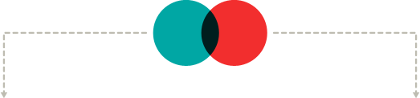

Science & Technology
Next Glass blends science and software to provide you with the best wine recommendations possible. Our scientific extraction of each wine’s DNA combines with software that analyzes your preferences to give us a tool we can use to ensure the next glass your pour is a great one.
Science
We determine the wine’s DNA by using Gas and Liquid Chromatography and Ion Trap Mass Spectroscopy, all processes that determine the chemical makeup of each wine.
These processes allow us to look at the wine on a molecular level, uncovering the unique qualities of each bottle and helping create the wine’s overall taste and enjoyment profile.
A team of prominent PhD scientists and expert lab technicians developed and maintain the revolutionary Genome Cellar.
Technology
Once the wine’s DNA is determined, our sophisticated recommender and classifier software connects it to then end-users.
Our software is based on Apache open-source projects like Mahout and Hadoop, two proven, innovative projects.
A mobile application suitable for smartphones and tablets, and a desktop version with portals for consumer and commercial users, makes interfacing with Next Glass simple.